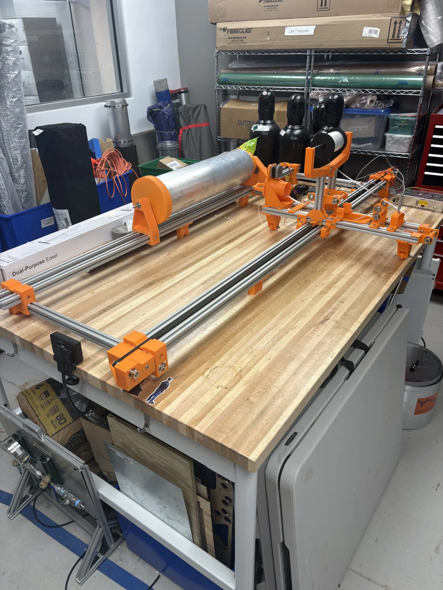

Two-Stage Rocket
30,000 ft Category — Target IREC 2027

My Role
Structures Lead (July 2026–present). Responsible for all structural components: airframe, fin can, staging interface, and recovery structure.
Duke Aero's next vehicle: a two-stage rocket targeting the 30,000 ft category at IREC 2027. Currently in early design and structures development, building on what the team learned from Devil's Advocate.